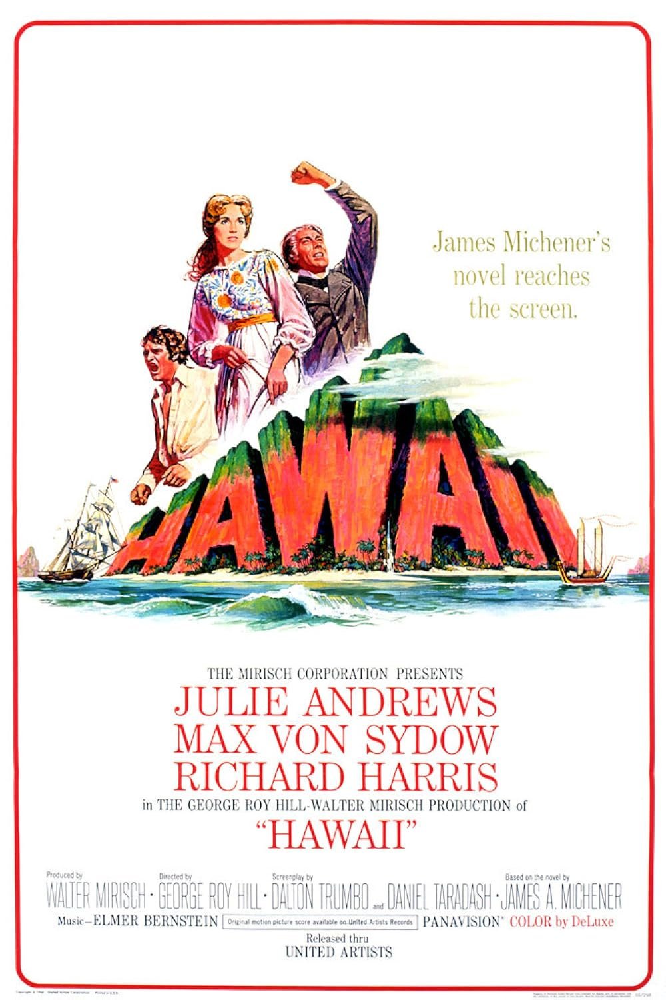

Hawaii
39th Academy Awards
(Oscars 1967)
7 Nominations, 0 Awards
| Nominations | ||
|---|---|---|
| Category | Nominees | Result |
| Actress in a Supporting Role | Jocelyne Lagarde | Nominated |
| Cinematography (Color) | Russell Harlan | Nominated |
| Costume Design (Color) | Dorothy Jeakins | Nominated |
| Special Visual Effects | Linwood G. Dunn | Nominated |
| Sound | Gordon E. Sawyer | Nominated |
| Music (Original Music Score) | Elmer Bernstein | Nominated |
| Music (Song) "My Wishing Doll" |
Elmer Bernstein and Mack David | Nominated |